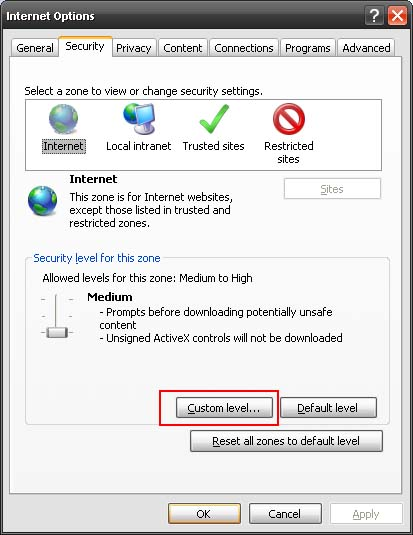
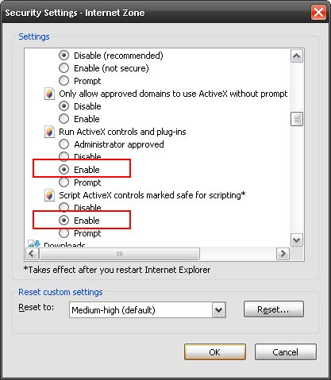

How do I enable ActiveX?
Note: Please open Internet Explorer first to enable ActiveX settings.
To enable ActiveX in Internet Explorer 6 and later:
- From the Tools menu (the "gear" icon in IE 9) | Select Internet Options.
- Select the Security tab.

- Click Internet as the zone to change.
- Click Custom Level. The Security Settings - Internet Zone dialog box appears.

- Scroll down to the options below Internet ActiveX Controls and Plugins and enable the following:
- Run ActiveX Controls and Plugins
- Script ActiveX Controls Marked Safe for Scripting
- Click OK to save your settings and exit the Internet ActiveX Controls and Plugins dialog box.
- Click OK to close the Internet Options dialog box.
- Exit Internet Explorer.
ActiveX is enabled when you reboot Internet Explorer.